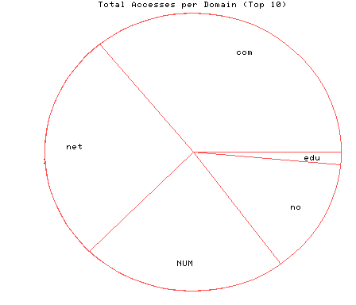
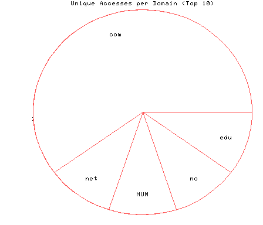

HTTP Server Domain Statistics
This report covers the day of 02/12/96.
All dates are in local time.
1 level, sorted by number of requests, 5 unique domains.
24 : 6 : 02/12/96 : US Commercial (.com) 18 : 1 : 02/12/96 : Network (.net) 15 : 1 : 02/12/96 : (numerical domains) 9 : 1 : 02/12/96 : Norway (.no) 1 : 1 : 02/12/96 : US Educational (.edu)

Statistics generated at Mon Feb 19 03:20:19 MET 1996, (C) Schibsted Nett AS, 1995.